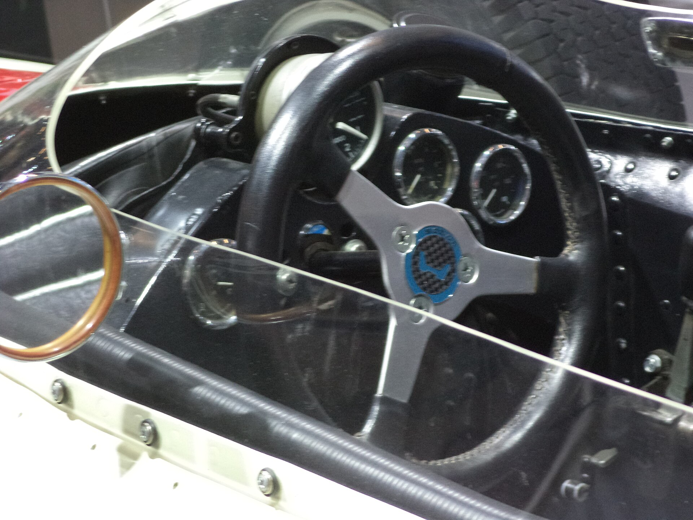

Compare valid, similar laps
Use laps with the same car, setup, fuel load, weather, and track state when possible. Exclude laps with traffic, a missed apex, a cut, or a major correction so the comparison answers a useful question.
08 / LAP ANALYSIS
Telemetry tools vary by simulator: some provide detailed traces, while others offer a lap delta, replay, or only basic timing. Whatever is available, compare clean laps in the same car and conditions. Data helps you ask a better question; it does not tell you to copy another driver’s inputs blindly.

Line up your laps and focus on one section. Whole-lap totals can hide where a change helped or hurt.
Use laps with the same car, setup, fuel load, weather, and track state when possible. Exclude laps with traffic, a missed apex, a cut, or a major correction so the comparison answers a useful question.
Check where the time difference begins growing, not just which lap is faster overall. A loss that starts at corner entry points to a different question than one that appears on the following straight.
If your sim shows traces, look at brake release, minimum speed, throttle pickup, and steering through the same corner. A later brake point is not automatically better if it produces a slower exit or extra corrections.
Choose one small adjustment based on the trace—such as releasing the brake more smoothly or beginning throttle a little later. Keep the rest of the run stable so you can tell what caused the difference.
ILLUSTRATIVE SPEED OVERLAY · REAL TRACES WILL VARY BY SIMULATOR AND CORNER